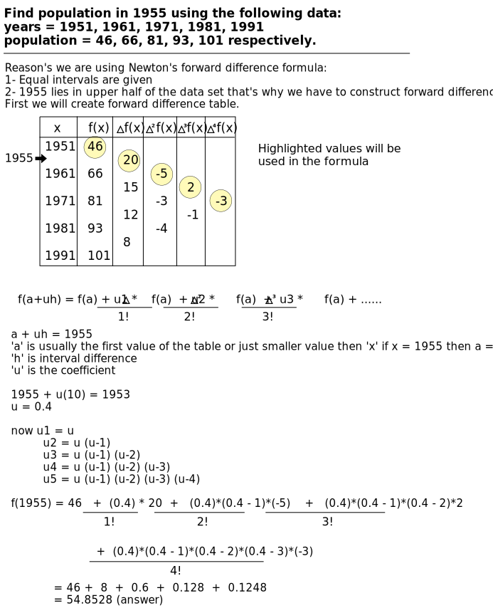
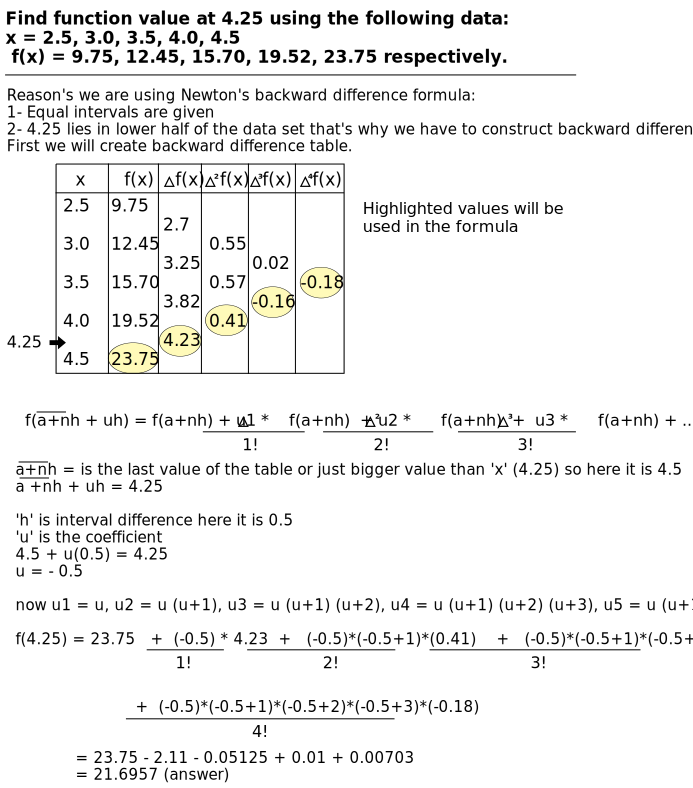

Simultaneous Linear Algebric Equations
Matrices
- The evolution of the concept of matrices is the result of an attempt to obtain compact and simple methods of solving systems of linear equations. Matrices are not only used as representations of the coefficients in the system of linear equations, but their utility exceeds that initial use.
Applications of Matrices
- Matrices are used in business and scientific fields such as budgeting, sales projection, cost estimation, and analyzing the results of experiments.
- Physical operations such as magnification, rotation, and reflection through a plane can be represented mathematically by matrices.
Matrix Inversion Method for Solving Linear Equations
Steps:
- Convert the linear equation into a matrix in the form AX = B, where A is the matrix of coefficients of the equation, X is the matrix of unknown variables, and B is the matrix of known results.
- Calculate the matrix of unknowns using the formula X = A-1B.
- Compute A-1 as (Adj A) / |A|.
- Determine the matrix of unknowns (X) by multiplying A-1 and the matrix B.
Gauss Elimination Method for Solving Linear Equations
- In linear algebra, Gaussian elimination is an efficient algorithm for solving systems of linear equations.
- This is a direct method that is divided into two parts:
- Elimination or triangular elimination
- Back substitution
Steps for Gauss Elimination
- Convert the equation into matrix form, i.e., AX = B, where A is the matrix of coefficients, X is the matrix of unknowns, and B is the result matrix.
- The obtained matrix will also be augmented as [AB].
- Choose the pivot element as A11 if it is nonzero.
- Take the pivot element and make the elements below it zero:
R2 → R2 - (a21 / a11) * R1
R3 → R3 - (a31 / a11) * R1
Ill-Conditioned and Well-Conditioned System
- When the change in the values of the matrix does not significantly affect the determinant, it is called a well-conditioned system. Conversely, when the variation in the determinant is very high, it is referred to as an ill-conditioned system.
Interpolation
- Interpolation is a statistical method used to estimate unknown values based on related known values.
- It involves constructing a function that passes through known data points, allowing for the estimation of values within the range of those data points.
- Interpolation is commonly used in various fields such as mathematics, engineering, computer science, and data analysis.
- The accuracy and reliability of interpolation depend on factors such as the distribution and quality of the known data points, the chosen interpolation method, and any assumptions made about the underlying data behavior.
Forward and Backward difference table

Newton's methods of Interpolation
Newton's forward difference interpolation formula
- Conditions:
- The function should be tabulated at equal intervals, such as regularly spaced values like 1, 2, 3, 4, etc., to ensure the accuracy of the interpolation process.
- The point for which the function is to be interpolated should lie in the first or upper half of the table. This means that the value you're trying to estimate falls within the range of known data points towards the beginning or top part of the data set.
Understanding formula using the following example:
Newton's backward difference interpolation formula
